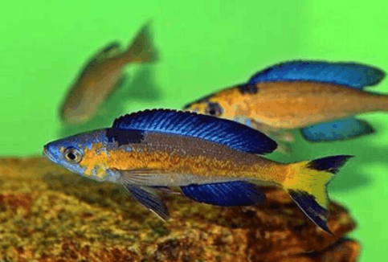

Systématique
- Ordre : Cichliformes
- Famille : Cichlidae
- Genre : Cyprichromis
- Espèce : C. microlepidotus
- Auteur : Poll, 1956

Cyprichromis microlepidotus est un cichlidé pélagique endémique du lac Tanganyika. Cette espèce se distingue des autres membres du genre par la petitesse de ses écailles, trait à l'origine de son nom spécifique. Elle possède un corps élancé, fusiforme et comprimé latéralement, adapté à la nage rapide en pleine eau.
Le mâle peut atteindre une taille de 12 à 14 cm, tandis que la femelle reste légèrement plus petite, avoisinant les 10 cm. La coloration est extrêmement variable selon les populations géographiques (Kiriza, Bulu Point, Magara, etc.), avec des mâles arborant des teintes allant du bleu au jaune néon, particulièrement sur la nageoire caudale et dorsale. La tête est fine avec une bouche protractile permettant de capturer le plancton en suspension.
Il s'agit d'un poisson grégaire qui vit en bancs massifs, parfois composés de milliers d'individus dans la nature. Contrairement à la majorité des cichlidés du lac, il occupe la colonne d'eau libre (zone pélagique) et n'est lié au substrat rocheux que lors des périodes de reproduction. Les mâles dominants défendent des territoires tridimensionnels en pleine eau contre les autres mâles.
En aquarium, c'est une espèce active qui nécessite de grands espaces de nage. Elle est globalement pacifique envers les autres espèces, mais les joutes entre mâles pour la dominance sont fréquentes. Il est impératif de maintenir un groupe d'au moins 10 à 12 individus pour diluer l'agressivité et permettre aux femelles de ne pas être constamment sollicitées. Le bac doit être impérativement couvert, car c'est un excellent sauteur.
Mode : ovipare incubateur buccal maternel.
La reproduction s'effectue en pleine eau. Le mâle attire la femelle dans son territoire pélagique par des parades vibrantes. La femelle libère ses œufs que le mâle fertilise immédiatement ; elle les récupère ensuite en bouche avant qu'ils n'atteignent le fond. L'incubation buccale dure environ 21 à 25 jours selon la température.
Une portée compte généralement entre 10 et 20 alevins. Les jeunes naissent à une taille déjà avancée (environ 1,5 cm) et sont capables de nager librement dès leur sortie de la bouche maternelle. Ils acceptent immédiatement des nauplies d'artémias ou de la nourriture fine en suspension.
Dimorphisme sexuel : très marqué. Les mâles sont beaucoup plus colorés avec des nageoires impaires développées et pigmentées. Les femelles sont uniformément grisâtres ou beiges, une livrée de camouflage adaptée à la vie en pleine eau.
Espérance de vie : environ 5 à 8 ans en conditions optimales de maintenance.
Cyprichromis microlepidotus fréquente les eaux libres à proximité des côtes rocheuses du lac Tanganyika, généralement à des profondeurs allant de 10 à 30 mètres. Il se nourrit presque exclusivement de zooplancton. L'eau y est caractérisée par une forte dureté, une grande alcalinité (pH élevé) et une excellente oxygénation due au brassage de surface.
Répartition

Origine naturelle :
- Afrique de l'Est : Endémique du lac Tanganyika.
- Principalement observé sur les côtes de la Tanzanie, du Burundi et de la République Démocratique du Congo.
- Localité type : Baie de Burton, lac Tanganyika.
Paramètres de maintenance
Température : 23 à 26 °C.
pH : 8,2 à 9,2 (eau très alcaline).
GH : 10 à 20 °dGH (eau dure).
Courant : modéré à soutenu pour assurer une bonne oxygénation.
Volume conseillé : minimum 400 à 500 litres pour un groupe, avec une longueur de façade d'au moins 150 cm.
Régime alimentaire
Régime : carnivore planctivore.
En aquarium, il accepte les flocons et granulés de haute qualité, mais nécessite des apports réguliers de nourritures congelées ou vivantes de petite taille (cyclops, artémias, daphnies) pour maintenir sa santé et ses couleurs. La nourriture doit impérativement rester en suspension car il se nourrit rarement au sol.